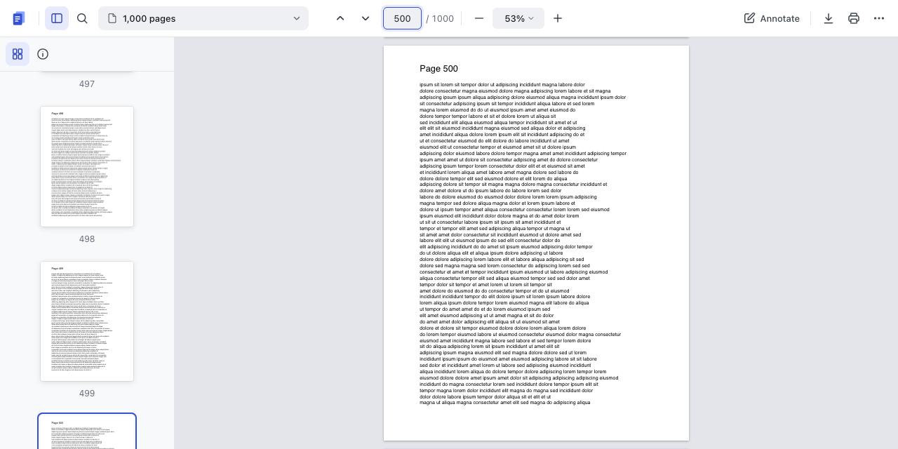

ParaPDF
REACT PDF VIEWER · BUILT ON PDF.JS
Long PDFs.
Your React UI.
Virtualized pages. Search, forms,
and annotations. Open source.
npm install parapdf

REACT PDF VIEWER · BUILT ON PDF.JS
Virtualized pages. Search, forms,
and annotations. Open source.
npm install parapdf
